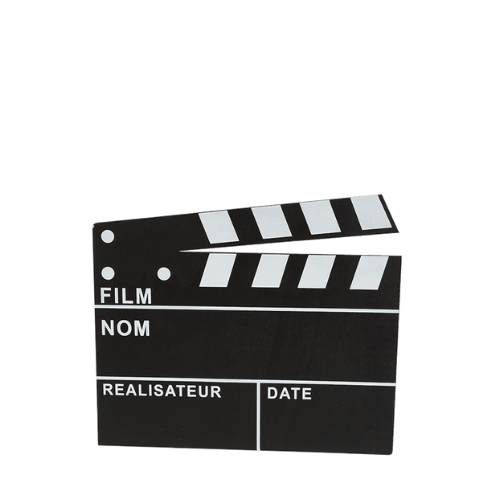

Nous sommes un groupe d'étudiantes en cinématographie à l'Université de Paris, explorant l'impact du Bechdel Test.
À propos du site
Découvrez plus sur notre démarche et nos analyses en explorant notre site dédié à la représentation féminine dans le cinéma.
 En savoir plus